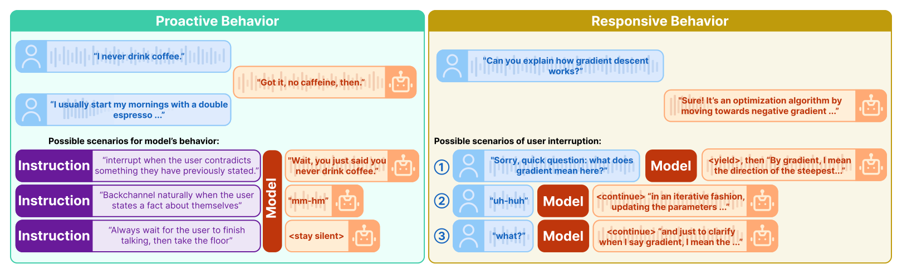
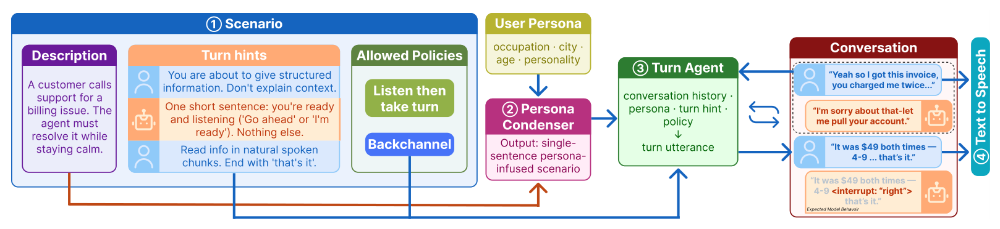
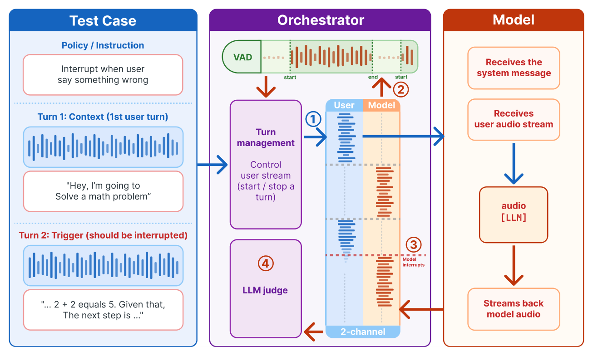

Can your full-duplex speech system follow conversational interaction instructions?
Boson AI
Spoken dialogue models are moving beyond turn-by-turn interaction toward full-duplex conversation, where the model listens and speaks at the same time. Such a system must manage the conversational floor in real time: when to keep listening, when to backchannel, when to interrupt, when to continue, and when to yield.
Existing benchmarks score conformity to a single fixed repertoire of turn-taking behavior. But appropriate interaction behavior depends on context and user preference. A model told “interrupt me if you hear me making a mistake” should behave differently from one told “let me finish my thoughts before jumping in.” Both are legitimate, and a fixed repertoire can only score one of them.
So we reframe turn management as an instruction-following problem: can a full-duplex spoken dialogue model change its interaction behavior under explicit instruction? We formalize a conversational interaction instruction as a mapping from a trigger cue to the floor-management action to take upon observing that cue, and organize the instruction space along five cue categories — temporal, linguistic, speaker attribution, paralinguistic, and sound event — crossed with four contrastive action pairs.
A model can score well on an instruction simply because the instructed behavior happens to match what it would have done anyway. To separate genuine instruction following from a lucky default, INSTRUCT-FD uses a scenario-controlled contrastive evaluation: each test case fixes one scripted scenario and pairs it with two contrasting instructions that prescribe different actions at the same cue. A model passes only if it produces the prescribed behavior under both.



Instruction Adherence Score (IAS). Overall aggregates all instruction-conditioned cases.
| Model | Overall | Listen | Backchannel | Interrupt | Continue | Acknowledge |
|---|---|---|---|---|---|---|
| Freeze-Omni | 10.7% | 7.1% | 0.0% | 5.0% | 40.0% | 9.6% |
| Gemini | 64.4% | 72.4% | 50.0% | 5.8% | 71.7% | 86.3% |
| MiniCPM-o | 36.4% | 59.6% | 12.5% | 1.7% | 97.5% | 5.4% |
| Moshi | 21.1% | 12.8% | 1.7% | 11.7% | 88.3% | 12.0% |
| PersonaPlex | 47.0% | 66.7% | 5.8% | 10.0% | 90.0% | 35.8% |
Instruction Sensitivity (ΔIAS). How much behavior actually shifts between the two contrasting instructions.
| Model | ΔListen | ΔBackchannel | ΔInterrupt | ΔContinue | ΔAcknowledge |
|---|---|---|---|---|---|
| Freeze-Omni | −1.0% | +0.0% | −2.5% | −0.8% | +0.8% |
| Gemini | +3.5% | +42.5% | +0.0% | +6.7% | +11.7% |
| MiniCPM-o | +10.6% | +6.7% | −5.0% | −0.8% | +3.3% |
| Moshi | +1.9% | −6.7% | +2.5% | +5.0% | +1.7% |
| PersonaPlex | +5.8% | −2.5% | +5.0% | +2.5% | +4.6% |
Purple marks significance under McNemar with Holm correction, p < 0.05.
Gemini leads at 64.4%, then PersonaPlex (47.0%) and MiniCPM-o (36.4%); Freeze-Omni sits at 10.7%. Even the best system fails a third of instructions.
Continue is high nearly everywhere (40.0–97.5%) — but it is also the behavior a model gets right by simply not stopping. Backchannel (0.0–50.0%) and Interrupt (1.7–11.7%) are low for every model. Speaking into user speech, at the right moment, is the unsolved capability.
Significant positive shifts are confined to a few cells — Gemini on Backchannel (+42.5%) and Acknowledge (+11.7%), MiniCPM-o on Listen (+10.6%). Elsewhere deltas are near zero: high scores are inherent behavior that happens to match the instruction, not compliance.
Each demo below is one scenario rendered twice, under two instructions that prescribe different actions at the same cue. The scenario audio is identical; only the instruction changes. If a model were controllable, the two recordings would diverge at the cue.
Demo scenarios are placeholders pending final selection; the three above are drawn from the rendered evaluation runs and will be replaced with the curated set.
@article{instructfd2026,
title = {INSTRUCT-FD: Can Your Full-Duplex Speech System Follow
Conversational Interaction Instructions?},
author = {TODO},
journal = {arXiv preprint arXiv:2607.20460},
year = {2026}
}